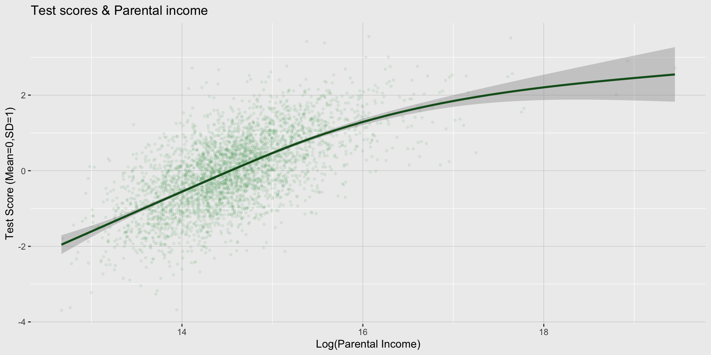
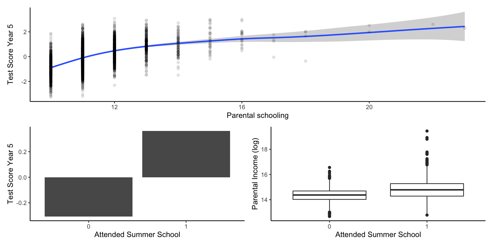
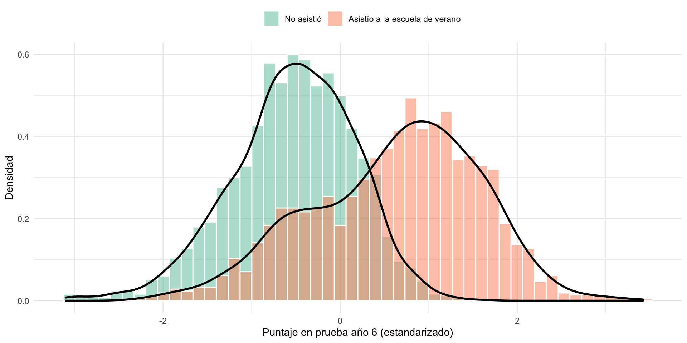
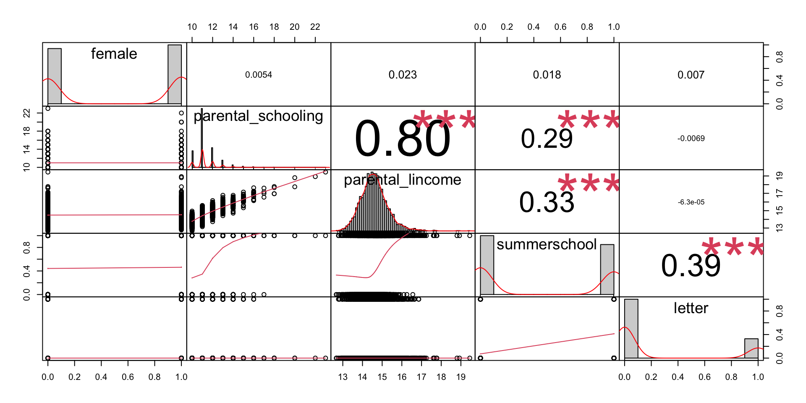
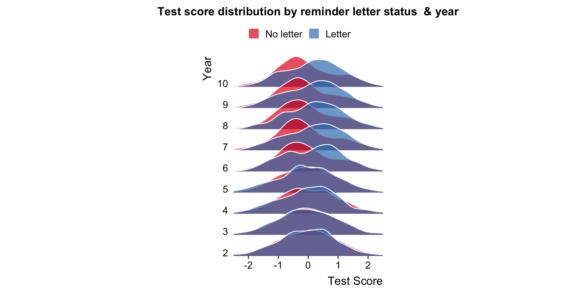
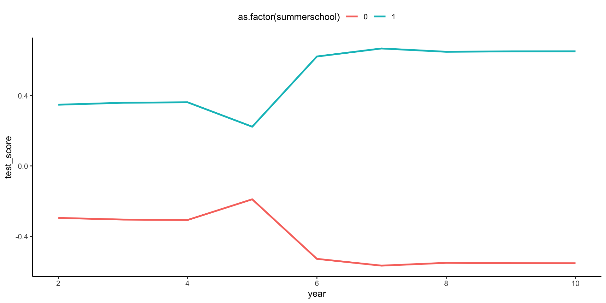
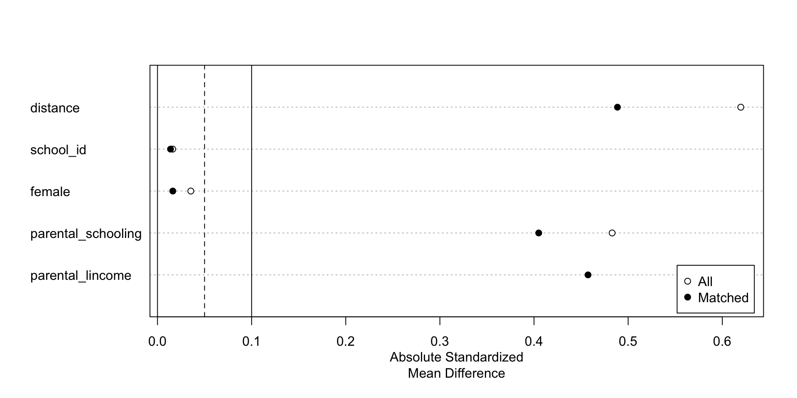

Datos observacionales y estrategias de identificación
Ayudantía 2- Curso métodos en CCS
Bienvenida al tutorial
Hola!
Este tutorial está escrito como la actividad de aplicación de la ayudantía 2 del curso
La idea es ir desarrollando el tutorial en paralelo a la sesión y que puedan tomar apuntes adicionales directamente en el notebook. Está escrito como .qmd, un notebook Quarto y puede ser editado en rstudio, vscode o cualquier otro IDE o editor de texto. El lenguaje utilizado para el procesamiento y análisis es R.
Se recomienda crear un fork al repositorio y trabajar en su propia rama.
Como funciona
El tutorial se estructura como un proyecto de investigación ficticio completo, que empezaremos cargando datos brutos hasta obtener e interpretar coficientes de regresión.
Lo métodos a cubir son:
Regresión lineal y método de diferencias (en datos experimentales)
Logit y probit
Variables Instrumentales
Regresión Discontinua
Diferencias en Diferencias
Efectos fijos, aleatorios y modelos jerárquicos
Matching
Como funciona
Los datos y notebook son descargables en el siguiente repositorio de proyecto así que se recomienda correr todo en tu propio computador o en una instancia en la nube.
Este tutorial es una adaptación del trabajo de Hans H. Sievertsen, agregando la estimación con métodos de de métodos de matching y algunos cambios a la situación a analizar.
1 Pregunta de investigación y datos
Vamos a usar una situación ficticia, con datos simulados para poder aplicar de manera consisa los diferentes tipos de estrategias de identificación revisadas en clase. Algunas (que se supone ya manejan) las revisaremos muy rápidamente y en otras, vamos a tener mayor énfasis.
1.1 Pregunta de investigación
Nuestro objetivo es responder la siguiente pregunta ficticia de investigación:
Asistir a cursos de verano mejora los resultados académicos?
Para responder esta pregunta, usaremos unos datos ficticios y simulados
1.2 Contexto ficticio
La pregunta de investigación se inspira en trabajos como el de Matsudaira (2007) e intervenciones en estudiantes de bajo nivel socioeconómico por Dietrichson et al ( 2017).
El escenario ficticio es el siguiente:
Para un conjunto de colegios en una comuna, existe la opción de asistir a un curso de verano intensivo durante el verano entre 5 y 6to básico.
El curso de verano se enfoca en mejorar las habilidades académicas de preparar la prueba de admisión a la universidad vigente (PSU en ese momento)
El curso de verano es gratuito, pero para ser matriculados requiere que los padres se involucren en un proceso.
Estamos interesados en testear el impacto de la participación en el curso en los resultados académicos de los estudiantes.
1.3 Datos ficticios dispobibles
school_data_1.csv
Usamos esta data para ejemplificar como cargar data guardada en formato csv.
Este dataset tiene información sobre cada individuo (con identificador id), la escuela a la que asiste, un indicador si participó en el curso de verano, sexo, ingreso del hogar (en logaritmo), educación de los padres, resultados en una prueba estandarizada que se realiza a nivel de la comuna tanto para el año 5 como para el año 6.
school_data_2.dta
Usamos esta data para ejemplificar como cargar data guardada en formato STATA.
Este dataset tiene información de cada individuo (con identificador id).
Este dataset tiene la información si el individuo recibió la carta de invitación para participar del curso de verano.
school_data_3.xlsx
Usamos este dataset para practicar como cargar datos guardados en formato Microsoft Excel.
Este dataset incluye datos sobre cada individuo (con identificador id)
Este dataset tiene información de rendimiento académico antes y después del curso de verano.
II. Preparación de los datos
En esta sección vamos a preparar los datos para el análisis. Este proceso generalmente incluye cargarlos, inspeccionarlos, limpiar y dar la estructura deseada. También revisaremos estadísticas descriptivas que nos den una idea antes de estimar cualquier modelo.
En la vida real, este proceso suele ser bastante largo, laborioso e implica volver sobre lso pasos anteriores múltiples veces. También invlocura tomar desiciones por parte de los investigadores, por lo cual la documentación de esta fase es especialmente importante.
En nuestro caso, será bastante lineal y directo, ya que son datos ficticios simulados. Pero en la realidad, no suele ser así.
0. Crear el proyecto y clonar el repositorio
Este proyecto está sustentado en el repositorio de github. Clónelo y luego carguelo en su computador.
1 Cargar los datos
1.1 Intalar y cargar paquetes
Para poder cargar los datos, necesiamos los paquetes adecuados. Siempre hay multiples formas de hacer las cosas en cualquier lenguaje o programa. En este caso, usaremos la función read_csv() del paquete readr. Para poder usarlo, debemos estar seguros de que está instalado.
Si no está instalado, podemos hacerlo con la función install.packages("[nombre paquete a instalar]")
Si el paquete ya está instalado, para poder usarlo necesitamos tenerlo cargado en nuestra librería. Para esto usamos la función library("[nombre paquete a cargar]").
Cada paquete lo debemos instalar solo una vez por computador, pero debemos cargarlo en cada sesión para poder utilizarlo.
1.2 Cargar datos csv
Con readr estamos en condiciones de usar la función read_csv() para cargar la primera base de datos.
Vamos a cargar school_data_1.csv agregando el path a los datos en paréntesis. Puede reemplazar por el path correspondiente o usar el paquete auxiliar here
PS. notemos que tambien estamos incluyendo comentarios en los bloques de código. Las líneas que empiezan con el símbolo # son ignoradas por R.
Entonces, dentro de here("[Escribes el directorio relativo]") actuará como el directorio relativo sin errores. Entonces, cargamos los datos y los asignamos a un data frame.
Usualmente, después de cargar un dataset es útil visualizarlo. Empleamos la función head() para ver sus primeras 6 observaciones.
Una segunda alternativa es descargar y cargar los datos directamente en R desde internet. Puede ser cualquier link directo o, si está alojado en github, tienes que asegurarte de que sea un repositorio público.
1.3 Cargar datos STATA
En Ciencias Sociales y Economía es muy comun contar con datos para ser utilizados en el programa STATA, estos son archivos que terminan en .dta. Para cargarlos, vamos a usar HAVEN del paquete tidyverse. También usaremos muchas otras funciones de ese paquete, asi que es buen momento para cargalo.
Usemos el comando tail() para ver las últimas 10 entradas.
Finalmente, cargaremos el tercer dataset guardado como hoja de cálculo de Excel .xlsx. Para esto usaremos el paquete readxl que viene incluido en tidyverse. Luego de asignarlo a un dataframe, démosle una mirada con glimpse() (también del tidyverse).
Tenemos 3 bases de datos con información diferente de los mismos individuos. Generalmente es buena idea tener una sola gran tabla con toda esta información, especialmente si estimaremos modelos en base a ésta.
La base de datos 1 y 2 tienen una forma similar: los individuos son filas y las variables columnas y hay una sola fila para cada individuo.
Para hacerlo, podriamos usar varias alternativas.
Una alternativa es usar la función nativa merge( ). En esta función, primero mencionamos los datasets a unir, luego informamos cual es la(s) columnas(s) que debe usar para unir ambos datasets con by=..... Por defecto, R incluye todas las filas que están en ambos datasets (basados en la variable by), pero podemos fijar all=TRUE para mantener todas las filas que están en ambos datasets o all.x=TRUE para mantener todas las filas coincidentes y las del primer dataset or all.y=TRUE para guardar todas las filas del segundo dataset.
Veamos un ejemplo con los dos primeros datasets. Luego usemos dim() para conocer las dimensiones del nuevo dataset unido en términos de filas y columnas.
[1] 3491 9
Notemos que el dataset unido tiene 3491 filas y 9 columnas. Unimos todas las filas y agregamos al dataset de información del estudiante si recibió o no la carta (school_data_2)
¿Qué ocurre si las columnas tienen igual nombre? R va a renombrarlas automáticamente agregando un sufijo .x (a la columna del primer dataset) e .y ( a la columna del segundo dataset).
Entonces, en el siguiente bloque:
Unimos school_data_1 y school_data_2 usando como variable de unión person_id y guardamos el dataset unido como school_data.
Unimos school_data_3 con school_data y sobre-escribimos school_data.
Notar que acá unimos por las columnas person_id y school_id. Esto no es realmente necesario porque cada estudiante con id única tiene un solo colegio, pero sirve de ejemplo en como usar más de una columna mediante c(). 3. Usamos la función summary() para obtener una estadística descriptiva de las variables en el dataset unido.
person_id school_id summercamp female
Min. : 1.0 Min. : 1.00 Min. :0.0000 Min. :0.0000
1st Qu.: 873.5 1st Qu.: 8.00 1st Qu.:0.0000 1st Qu.:0.0000
Median :1746.0 Median :15.00 Median :0.0000 Median :1.0000
Mean :1746.0 Mean :15.66 Mean :0.4589 Mean :0.5153
3rd Qu.:2618.5 3rd Qu.:23.00 3rd Qu.:1.0000 3rd Qu.:1.0000
Max. :3491.0 Max. :30.00 Max. :1.0000 Max. :1.0000
parental_schooling parental_lincome test_year_5 test_year_6
Min. :10.00 Min. :12.67 Min. :-0.2696 Min. :0.2824
1st Qu.:11.00 1st Qu.:14.12 1st Qu.: 1.7997 1st Qu.:2.0071
Median :11.00 Median :14.52 Median : 2.2583 Median :2.4492
Mean :11.32 Mean :14.56 Mean : 2.2589 Mean :2.5174
3rd Qu.:12.00 3rd Qu.:14.95 3rd Qu.: 2.7154 3rd Qu.:3.0185
Max. :23.00 Max. :19.45 Max. : 4.6897 Max. :4.9831
NA's :5 NA's :6 NA's :5
letter test_year_2 test_year_3 test_year_4
Min. :0.0000 Min. :-0.5701 Min. :-0.464 Min. :0.01425
1st Qu.:0.0000 1st Qu.: 1.7712 1st Qu.: 1.818 1st Qu.:1.78282
Median :0.0000 Median : 2.2377 Median : 2.249 Median :2.24947
Mean :0.2469 Mean : 2.2246 Mean : 2.254 Mean :2.24952
3rd Qu.:0.0000 3rd Qu.: 2.6644 3rd Qu.: 2.715 3rd Qu.:2.70903
Max. :1.0000 Max. : 4.7373 Max. : 4.389 Max. :4.34995
test_year_7 test_year_8 test_year_9 test_year_10
Min. :0.03139 Min. :-0.1856 Min. :-0.2456 Min. :-0.3043
1st Qu.:1.93768 1st Qu.: 1.9277 1st Qu.: 1.9371 1st Qu.: 1.9415
Median :2.36855 Median : 2.3889 Median : 2.3868 Median : 2.3776
Mean :2.44445 Mean : 2.4506 Mean : 2.4531 Mean : 2.4541
3rd Qu.:2.97207 3rd Qu.: 2.9596 3rd Qu.: 2.9861 3rd Qu.: 2.9693
Max. :4.77111 Max. : 5.0451 Max. : 4.6565 Max. : 4.9295
learnings
Min. : 5.386
1st Qu.: 9.181
Median :10.041
Mean :10.064
3rd Qu.:10.959
Max. :14.621
Otra opción de hacer lo mismo es con join del paquete dplyr del tidyverse.
(foto sacada de link, puedes ver ejemplos detallados de los diferentes tipos de join)
En este caso, podríamos hacer en un pipe %>% dos left joins seguidos.
3. Lipiar los datos
3.1 Tidyng los datos
Ahora que hemos unido las bases de datos, trataremos de que satisfazgan los principios de Tidy Data.
Un data frame se considera “tidy” (Según Hadley) si se cumplen las siguientes condiciones:
Cada columna (variable) contiene todas las medidas de la misma data/feature/caracteristica de las observaciones.
Cada fila contiene medidas de la misma unidad de observación.
Es porque tenemos puntajes de las pruebas del año 2 al 10. Este tipo de datos son de panel
Generalmente, que hagamos con este tipo de datos depende del tipo de modelos que queramos usar. Si bien el formato wide es facil de entender, generlamente para modelos y análisi preferimos que esté en formato long. Especialmente cuando modelamos incluyendo efectos fijos También es este el que adhiere a los principios tidy de mejor manera.
Para cambiar a long, usamos pivot_longer()
[1] 10
Ahora tenemos nuestros datos listos para que los inspeccionemos.
3.2 Selección de muestra
Ya que contamos con datos que siguen los principios de tidy data, lo siguiente es seleccionar la muestra apropiada. En este trabajo, los unicos problemas que podríamos enfrentar son relacionados con valores faltantes o missing. Para inspeccionarlos vamos a usar la función skim() del paquete skimr, esta función nos muestra los vaores faltantes en nuestro dataset de una manera global.
Data summary
Name
school_data_tidy
Number of rows
31419
Number of columns
10
_______________________
Column type frequency:
numeric
10
________________________
Group variables
None
Variable type: numeric
skim_variable
n_missing
complete_rate
mean
sd
p0
p25
p50
p75
p100
hist
person_id
0
1
1746.00
1007.78
1.00
873.00
1746.00
2619.00
3491.00
▇▇▇▇▇
school_id
0
1
15.66
8.67
1.00
8.00
15.00
23.00
30.00
▇▇▇▇▇
summercamp
0
1
0.46
0.50
0.00
0.00
0.00
1.00
1.00
▇▁▁▁▇
female
0
1
0.52
0.50
0.00
0.00
1.00
1.00
1.00
▇▁▁▁▇
parental_schooling
45
1
11.32
1.10
10.00
11.00
11.00
12.00
23.00
▇▁▁▁▁
parental_lincome
0
1
14.56
0.69
12.67
14.11
14.52
14.95
19.45
▂▇▁▁▁
letter
0
1
0.25
0.43
0.00
0.00
0.00
0.00
1.00
▇▁▁▁▂
learnings
0
1
10.06
1.28
5.39
9.18
10.04
10.96
14.62
▁▃▇▃▁
year
0
1
6.00
2.58
2.00
4.00
6.00
8.00
10.00
▇▇▃▇▇
test_score
11
1
2.37
0.72
-0.57
1.88
2.33
2.84
5.05
▁▂▇▃▁
Con esta función podemos ver facilmente cuantas filas y comunas son, los tipos de varables y número de missing values. Además la media, desviación estándar, percentiles e incluso un histograma para cada variable.
En estos casos, para parental_schooling tenemos 45 missing y para test_score 11. Asumamos que estos valores missing son random y deseamos remover estas filas. Para esto usamos filter(). Esta funcion toma dos argumentos, el dataset a filtrar y la condición para que se mantenga en el dataset, en este caso que no sea na o !is.na(partental_schoolin). La función is.na() es verdad cuando el elemento en () es missing y usamos !para mostrar que queremos lo contrario a esto condición. En otras palabras queremos que la educaión parental no esté missing.
Data summary
Name
school_data_selected
Number of rows
31363
Number of columns
10
_______________________
Column type frequency:
numeric
10
________________________
Group variables
None
Variable type: numeric
skim_variable
n_missing
complete_rate
mean
sd
p0
p25
p50
p75
p100
hist
person_id
0
1
1746.67
1007.89
1.00
873.00
1746.00
2620.00
3491.00
▇▇▇▇▇
school_id
0
1
15.66
8.68
1.00
8.00
15.00
23.00
30.00
▇▇▇▇▇
summercamp
0
1
0.46
0.50
0.00
0.00
0.00
1.00
1.00
▇▁▁▁▇
female
0
1
0.52
0.50
0.00
0.00
1.00
1.00
1.00
▇▁▁▁▇
parental_schooling
0
1
11.32
1.10
10.00
11.00
11.00
12.00
23.00
▇▁▁▁▁
parental_lincome
0
1
14.56
0.69
12.67
14.11
14.52
14.95
19.45
▂▇▁▁▁
letter
0
1
0.25
0.43
0.00
0.00
0.00
0.00
1.00
▇▁▁▁▂
learnings
0
1
10.06
1.28
5.39
9.18
10.04
10.96
14.62
▁▃▇▃▁
year
0
1
6.00
2.58
2.00
4.00
6.00
8.00
10.00
▇▇▃▇▇
test_score
0
1
2.37
0.72
-0.57
1.88
2.33
2.84
5.05
▁▂▇▃▁
Hemos removido todos los missing.
3.3 Modificar los datos
Un último paso que haremos antes de hacer estadística decsriptiva es modificar los nombres de algunas columnas para que se vean bien en la tablas.
Vambos renombrar la variable summpercap a summerschoolo. Lo hacemos con rename() del paquete dplyr. Esta función tiene una sintaxix similar a filter()
En un siguiente paso, vamos a transformar los puntajes en la pruebas a una variable que tenga media 0 y desviación estándar 1. Es mejor trabajar con variables estandarizadas, ya que no requieren conocer el conexto específico de la medida y es más facil de comunicar y comparar.
[1] "Mean of test score: -2.16293130706176e-17"
Esto tambien podemos hacerlo dentro de un pipe:
[1] "Mean of test score: 1.66440088479111e-17"
Podemos comprobar que efectivamente la media y desviación estándar corresponden a dichos valores:
[1] "Mean of test score: 1.66440088479111e-17"
[1] "SD of test score: 0.999872448979073"
Notar que si aplicamos mean() o sd() o cualquier otra función matemática a columnas que tienen valores missing, también dará un valor missing a menos que usemos la opción na.rm=FALSE.
Ya estamos bien, ahora pasamos a conocer mejor nuestros datos con estadística descriptiva.
4. Estadística descriptiva
Hasta ahora, cargamos datos en diversos formatos (csv, dta y xlsx) los unimos, re-estructuramos el dataset, removimos valores missing y generamos algunas transformaciones. El siguiente paso es empezar a conocer nuestros datos. Para esto haremos tablas de estadísticas descriptivas y también algunos graficos descriptivos.
4.1 Tablas de estadística descriptiva
Hasta ahora, ya conocemos dos maneras de calcular estadísticas resumen:
sumary() de R base. Esta función en realidad funciona en muchos tipos de objetos de R y suele dar un bien resumen. Pero no en el formato de una tabla exportable a un documento latex, word o etc. que podamos presentar en nuestra investigación o resultados.
skim() del paquete skimr
4.1.1 Tabla de estadísticas descriptivas “lista para llevar”
Una forma rápida de obtener una tabla de estadísticas descriptivas es con un primo de skim() del paquete modelsummary.
Unique (#)
Missing (%)
Mean
SD
Min
Median
Max
year
1
0
2.00
0.00
2.00
2.00
2.00
female
2
0
0.52
0.50
0.00
1.00
1.00
parental_schooling
12
0
11.32
1.10
10.00
11.00
23.00
parental_lincome
3486
0
14.56
0.69
12.67
14.52
19.45
letter
2
0
0.25
0.43
0.00
0.00
1.00
summerschool
2
0
0.46
0.50
0.00
0.00
1.00
test_score
3486
0
0.00
1.00
−4.13
0.02
3.71
Esta se puede exportar a varios formatos, como word o latex con el parámetro output=["ruta donde guardar la tabla"]. Primero hagámoslo en word:
[1] "tab_summary_statistics.docx"
La guardó en la carpeta por default. Si quieremos que esté en nuestra carpeta de output, podemos usar el paquete here::
Para customizar nuestra tabla aun más, podemos usar la función datasummary() tambien del pquete modelsummary. Esta función perimte que definamos una fórmula de la estructura de la tabla.
summerschool
0
1
Mean
SD
Mean
SD
female
0.51
0.50
0.52
0.50
parental_schooling
11.03
0.74
11.67
1.34
letter
0.09
0.29
0.43
0.49
test_score
−0.30
0.85
0.35
1.05
En este ejemplo: - Listamos las variables a incluir separadas por un + similar to in a female+parental_schooling+pa... - Usamos a ~ para separar la lista de variables en la fórmula - Usamos la formula Factor(summerschool)*(Mean+SD) para mostror la media y desviación estándar por separado para cada grupo creado por la variable summerschool. - Usamos Factor() para indicarle a R que debería considerar summerschool como una variable binaria.
También podríamos haber hecho esto al limpiar y procesar la base de datos. - Podemos tambien invertir el orden (Mean+SD)*Factor(summerschool), lo que entonces daría primero la media y devsicacion estándar y luego separar por los valores de la escuela de verano.
Usamos la opción sparce_header=FALSE para especificar que queremos incluir e summerschool como título.
4.1.3 Nombres de variables
Hasta ahora hemos utilizado los nombres de variables directamente en las tablas. Estó no es muy estético, podemos cambiarle el nombre directamente con espacios y mayúsculas en el nombre para darle un emjor aspecto. También es posible asignanrle una “label” o etiqueta cuando creamos la tabla, como lo vemos en el ejemplo:
Attended summer school
0
1
Mean
SD
Mean
SD
Female
0.51
0.50
0.52
0.50
Parental schooling (years)
11.03
0.74
11.67
1.34
Parental income (log)
14.35
0.51
14.81
0.79
Received reminder letter
0.09
0.29
0.43
0.49
Test Score
−0.30
0.85
0.35
1.05
4.1.4 Exportando nuestras tablas
Podemos exportar nuestras tablas a word o Latex podemos usar la expresión output="[nombre del archivo y ruta]". En datasummary() se ve así:
4.2 Gráficos de estadística descriptiva
Vamos a usar principalmente la librería ggplot2 para crear nuestros gráficos.
4.2.1 Scatter plot (o gráfico de dispersión)
Nuestro primer grafico es un gráfico de dispersión. En este queremos ver como dos variables se relacionan en los datos. En estos podemos inlcuir curvas que describan la relación.
En este gráfico
Iniciamos un objeto de grafico ggplot() usando los datos analysisdata que ya procesamos y la vamos a filtrar solo para incluir el año 5.
Especificamos que parental_income sea el eje x y test_score el eje y en aes()
Usamos geom_point() para incluir los puntos que describen la dispersión.
Usamos geom_smooth() para agregar una linea que describa la relación.
Usamos theme() para darle formato a los elementos
Usamos labs() para incorporar etiquetas a los ejes y al título.

4.2.2 Graficos de barras y boxplot
Del grafico anteriro podemos observar que los resultados de los test se correlacionan con ingreso parental. Esto no es una sorpresa. Veamos si tambien el asistir a la escuea de verano se correlaciona con estas características individuales.
Primero, creamos un scatter plot de educación de los padres y test score en el año anterior a la escuela de verano. Usemos el mismo código de arriba pero en lugar de ingreso, usamos educación parental. Segundo, creemos un gráfico de barras que muestre que los resultados previos a la asistencia a la escuela de verano. Tercero, creamos un box plot de ingreso de los padres y si asistieron o no a la escula de verano.
Nuestro codigo ahora tiene estos elementos.
Creamos el objeto ggplot() y cargamos la data y el tema. Este objeto es llamado un rawchart
Creamos 3 gráficos basados en rawchart, cada uno lo guardamos con un nombre.
Para el de barras, usamos geom_bar() y fijamos stat="summary", fun="mean" para decirle a R que cree un grafico de barras con la media de test_score
usamos labs() para decir los ejes y titulos.
Usamos geom_boxplot() para crear el boxplot.
Usamos el paquete patchwork para combinar varios gráficos en uno.
usamos ggsave() para guardar el gráfico combinado como un archivo png

Estos tres gráficos nos muestran que los puntajes en las pruebas se correlacionan con características de los padres (ambos scatters) y que aquellos que asistieron a la escuela de verano tenían mejores puntajes incluso antes de ir a la escuela de verano y que las caraterísticas de los padres se relaciona con la asistencia al éste
Es decir, tenemos SESGO DE SELECCIÓN
4.1.3 Histogramas y gráficos de densidad
Comaperemos la distribución de los puntajes depués de asistir a la escuela de verano por quienes fueron y los que no fueron. Creamos un histograma con una linea que muestre las densidades estimadas.

Claramente hay diferencias en sus resultados. Pero la estimación directa va a confundir cuanto de esto proviene del sesgo de selección y cuanto es el efecto real de ir a la escuela de verano.
4.1.4 Correalograma
Muchas veces queremos saber que tán correlacionadas estan las variables en una muestra. Podríamos simplementa calular una tabla de correlaciones, pero el paquete [PerformanceAnalytics] tiene una función muy conveniente: chart.Correlation() que nos presenta un gráfico con las correlaciones de a pares, su significancia estadística, gráficos de dispersión y distribución.

III. Estimación e identifiación
Tenemos nuestro problema base claro, ahora usemos algunas estrategias de identificaión para encontrar el efecto de asitir a una escuela de verano en esta muestra.
Para esto, partiremos del mejor caso: contamos con un experimento y luego iremos variando la información disponible y la estrategia que es factible emplear.
1. Regresión lineal ingenua
Nuestro objetivo es estimar la relación en los resultados académicos y asistira la escuela de verano. Para esto podríamos pensar en un modelo que directamente incluya a estos dos elementos.
Stargazer es util, pero esta siendo reemplazado por otros paquetes, particularmente modelsummary. Para una refrencia extra recomiendo revisar este link
Este modelo, como ya lo revisamos de la estadística descriptiva, podemos pensar que sufre de sesgo de selección. Es posible que los estudiantes con padres más involucrados, con más educación y mayor ingreso
Si solo fueran el problema la eduación de los padres y su ingreso, podríamos controlar por estos. Incluyámoslos al modelo en “cascada”. Una manera de hacerlo es con varios modelos en una lista.
Sin embargo, si creemos que lo que también correlacona es una inobservable como la preocupación / involucramiento de los padres aun preservan el problema de la autoselección, todavía tenemos presencia de sesgo por variables omitidad.
¿Qué hacer?
Vamos a revisra varias alternativas:
Experimental
Método de diferencias (en datos experimentales)
Logit y probit
Datos observacionales:
Variables Instrumentales
Regresión Discontinua
Diferencias en Diferencias
Efectos fijos, aleatorios y modelos jerárquicos
Matching
2. Método de diferencias (en datos experimentales)
Un primer caso, es que antes de asistir al curso de verano se selecciona al azar un grupo de estudiantes para enviarles una carta de invitación que recuerda sus características y detalla como participar.
¿Podría ser este un buen experimento?
Asignación aleatoria
Tratamiento: recibir la carta -> no es directamente la escuela de verano. Nos permite ver el efecto causal de recibir la carta, pero no de asistir a la escuela de verano. Vamos a usar una técnica para enfrentar esto posteriormente.
Por ahora, supongamos que conocer el efecto de la carta en el puntaje es una pregunta lo suficientemente interesante.
\(testscore_i=\beta_0+\beta_1Letter_i+u_i\).
Este tipo de modelos podemos estimarlos con el paquete linear modeloslm() o también, con feols() del paquete fixtest
Podemos ver que los que recibieron la carta, tienen 0.13 más puntaje que los que no, manteniendo lo demás constante.
Si le creemos a la asignción aleatoria, entonces este efecto podría ser interpetado como casual.
Para saber si la signación aletaoria efectivamente separó a dos grupos comparables de tratados y controles lo que debemos hacer es probar el balance en obbservables. Esto quiere decir que al menos en las variables observables, efectivamente ambos grupos no son estadísticamente diferentes antes del tratamiento.
2.1 Balance en observables
2.1 Comparación de a pares
Una primera opción es realizar una prueba t en las variables observables en ambos grupos, usamos el comando t.tes() . Por ejemplo podriamos comparar el ingreso de los padres con parental_income~summerschool para probar si la media de test_score es significantemente diferente en los dos grupos especificados por la asistencia al curso de veranp
Welch Two Sample t-test
data: parental_lincome by summerschool
t = -60.203, df = 24016, p-value < 2.2e-16
alternative hypothesis: true difference in means between group 0 and group 1 is not equal to 0
95 percent confidence interval:
-0.4765320 -0.4464809
sample estimates:
mean in group 0 mean in group 1
14.35102 14.81252
Podemos notar que no hay diferencias significativas entre los grupos.
Esto tendríamos que realizarlo en todas las variables y se suele presentar en una tabla de balance
2.3 Tabla de balance
Una tabla de balance presenta la diferencia de medias para grupos tratados y de control. Lo que deseamos es que no haya diferencias significativas antes del tratamiento en los grupos.
Podemos hacer una tabla que se vea bien usando datasummary_balance() del paquete modelsummary. Cargamos tambien el paquete estimatr porque le permite a datasummary_balance() calcular e inluir pruebas t de a pares directamente en la tabla.
Balance of pre-treatment variables
Letter (N=861)
No Letter (N=2619)
Mean
Std. Dev.
Mean
Std. Dev.
Diff. in Means
p
Female
0.52033
0.49988
0.51355
0.49991
-0.00677
0.73032
Parental schooling (years)
11.31359
0.97129
11.32952
1.14573
0.01593
0.69028
Parental income (log)
14.56467
0.66201
14.56289
0.70338
-0.00178
0.94629
Test Score
-0.01950
0.99990
0.00641
1.00014
0.02591
0.50968
Notes: This is a brilliant table!
Los reslutados de la tabla sugieren que no hay diferencias significativas entre tratados y controles ANTES del tratamiento. ¡ Muy bien!
Y como antes, podríamos directaente agregar la opción outpu=tab_balancing.docx para exportarla en word (o latex). (no olvidar especificar la carperta con here::here("output/)
2.4 Aproximación gráfica
Podemos ver el efecto causal propuesto en la siguiente gráfica. En los años antes del tratamiento son iguales y en los años posteriores, las distribuciones se empiezan a separar.

3. Efectos fijos, aleatorios y modelos jerárquicos
Muchas veces, los datos estan agrupados en diferentes categorías o dimensiones.
En nuestro caso los estudiantes están agrupados en colegios y es esperable que dentro de un colegio los resultados de dichos estudiantes estén correlacionados. Esto también ocurre al tener datos temporales o cualquier forma de agrupación lógica de la información.
Podemos ignorar esta estructura en los datos y simplemente considerarlos como un conjunto de unidades comparables, es decir tratarlo como un pooled cross-section. Si las diferencias entre grupos no son sistemáticas, no deberíamos observar diferencias, sin embargo esto puede estar haciendo que caigamos en problemas como la paradoja de Simpson o el Mathew effect
Para profundizar recomiendo: https://ds4ps.org/pe4ps-textbook/docs/p-040-fixed-effects.html o el capítulo del libro
En nuestro caso, tenemos por ejemplo 30 colegios en los datos.
Otro punto es considerar que no solo el efecto está modulado por la organziación de agrupación de la data, sino también los errores. Esto lo llamamos clusterizar.
3.1.2 Estimación usando lm()
Si cada grupo está afectando los resultados, calculemos el efecto el un OLS solo del año 5, un pooled en los años hasta el 5 y en este ultimo, incluyamos un efecto fijo por colegio y luego por año.
===========================================================
Dependent variable:
-------------------------------------------------
Test score
Cross-Sectional OLS (year 5) Pooled OLS School FE
(1) (2) (3)
-----------------------------------------------------------
Intercept -0.03 -0.01 -0.02
(0.04) (0.02) (0.02)
===========================================================
===========================================================
Note: *p<0.1; **p<0.05; ***p<0.01
3.1.2 Estimación usando feols()
En el caso de que deseemos hacer un modelamiento más complejo, como opr ejemplo incluir efectos fijos (lo revisaremos al final de la sesión) o calcular los errores estándar en cluster podemos usar la función feols() del paquete fixest.
El paquete fixest permite la inclusión de múltiples efectos fijos y clusterización de errores es, nosotros usaremos la función feols()
Esta función espera una fórmula de especificación de la forma:
Quisieramos compararlo con el modelo sin dicha clusterización, podriamos hacer una mejor tabla. Aprovechamos la función modelsummary() y:
Corremos ambas regresiones y guardamos los modelos en una lista. La primera es sin ajustar los errores, la segunda con cluster, la tercera con un efecto fijo por colegio.
Usamos modelsummary()para el output de las regresiones.
Especificamos que entre paréntesis esté el error estándar y que omita la constante en la tabla.
Definimos el formato de los números con fmt=...
Model 1
Model 2
Model 3
letter
0.2064***
0.2064***
0.2110***
(0.0285)
(0.0268)
(0.0276)
parental_lincome
1.0197***
1.0197***
1.0222***
(0.0299)
(0.0353)
(0.0363)
female
−0.0148
−0.0148
−0.0100
(0.0246)
(0.0205)
(0.0200)
parental_schooling
−0.0284
−0.0284
−0.0310
(0.0187)
(0.0223)
(0.0227)
Num.Obs.
3481
3481
3481
R2
0.474
0.474
0.480
R2 Adj.
0.473
0.473
0.475
R2 Within
0.473
R2 Pseudo
AIC
7653.2
7651.2
7669.0
BIC
7690.1
7682.0
7878.3
Log.Lik.
−3820.589
−3820.589
−3800.520
F
783.133
RMSE
0.73
Std.Errors
by: school_id
by: school_id
FE: school_id
X
+ p < 0.1, * p < 0.05, ** p < 0.01, *** p < 0.001
Podemos obsercar que no cambian los estimadores entre el modelo 1 y 2, pero si el error. Podemos ver que en el modelo 3 también cambia el estimador.
3.1.3 Elementos clave de los efectos fijos:
Los elementos centrales de efectos fijos son:
Usar efectos fijos nos permite controlar por todas las características invariantes en la unidad de analisis.
Asumimos que algunas de las características de la entidad que estamos estudiando afectan nuestra prediccion y necesitamos controlar por estas. Notar que efectos fijos nos permite entonces, capturar todas las caracteristicas que no varian en el tiempo en dicha entidad reduciendo indirectamente el sesgo de variables omitidas.
Importante saber que no podemos estudiar el efecto de estas caracter+pisticas que no varian en el tiempo usando efectos fijos. Por ejemplo, no podríamos estudiar ni el impacto del sexo, ni de la educación de los padres en este ejemplo. Como dichas variables no cambian en el tiempo, la constante que agregamos en el efecto fijo absorve dicho efecto tambien, pues son perefectaente colineares.
Por esto, es importante tener en cuenta que los efectos fijos estan diseñados para estudiar características que cambian en el tiempo para una entidad.
_ finalmente. efectos fijos tambien asume que cada entidad es única, tal que el error de dicha entidad es constante y no se correlaciona con el error de otra entidad. Es decir, asume independencia entre entidades.
3.2 Random vs fixed effects
CUn supuesto subyacente de la implementación de efectos fijos es que no hay correlación entre los errores de las entidades de agrucación y las constantes, es decir, que cada colegio es indepediente del otro (en nuestro caso).
Este supuesto se puede testear estadísticamente mediante un modelo aletrnativo que, si bien calcula agrupando los datos permite que los efectos sean aleatorios, es decir calculamos asumiendo que las diferencias entre las entidades afectan a la variable dependiente y que hau correlación entre el error de las entidades y sus constantes. Podemos usar la función plm() del paquete plm especificando model=“random”.
Necesitamos que el panel esté bien conformado para poder aplicar este paquete, es decir tener una observación por unidad dimensionada y variables que cambien intra y entre grupos.
Podemos comparar ambos modelos mediante la prueba de Hausman para decidir que modelo es mejor. Generalmente se prefiere efecto fijo ya que es más eficiente, si ambos están correctos.
Algunos otros elementos a tener en cuenta: - Los efectos aleatorios permiten icnluir elementos que son invariables en el tiempo dado que asume que el error de la entidad no está correlacionado con el predictor. - Los efectos aleatorios están influenciados por sesgo de variable omitida, ya que no estamos incluyendo directamente las dummies.
3. Logit y probit
Un segundo elemento es revisar que ocurre con probabilidad de entrar al preuniversitario dado que se recibió la carta.
En este caso, el modelo a estimar tendría como outcome de interés a una variable dicotómica.
\[ summerschool_i = g(letter_i)+u_i \]
3.1 Probabilidad lineal
Una primera aproximación sería sencillamente estimar un modelo lineal:
\[ summerschool_i = \beta_0+ \beta_1 letter_i + \gamma' X_i+u_i \] Ya sabemos como hacerlo, simplemente usamos lm() o felm(). Aprovechemos esta oportunidad para agregar una fila con la media de la variable dependiente, este es genralemnte un elemento importante a incluir cuando estamos rabajando con variables dicotómicas ya que pone en contexto el análisis. Esto lo hacemos con el parámetro add_rows=...
Podemos ver que recubir la carta aumenta la probabilidad de asistir a la escuela de verano en 44%, lo que es un incremento de casi un 100% considerando que la media de dicha variable era 0.46.
A pesar de su gran interpretabilidad, los modelos de probabilidad lineal tienen varios problemas: predicciones pueden salir del rango [0,1] y que son heterocedasticos por definición.
Una alternativa a este modelamiento es usar una forma funciónal que asegure que la predicciones estén en el rango [0,1] es con logit o probit.
3.2 Logit y probit
Para estimar logit usamos glm() para estimar modelos logit y probit. Espeificamos la función en family=binomial(link="probit") o family=binomial(link="logit").
Estimemos con logit:
Call:
glm(formula = summerschool ~ letter, family = binomial(link = "logit"),
data = regdata)
Deviance Residuals:
Min 1Q Median 3Q Max
-1.7781 -0.9267 -0.9267 1.4508 1.4508
Coefficients:
Estimate Std. Error z value Pr(>|z|)
(Intercept) -0.62298 0.04098 -15.20 <2e-16 ***
letter 1.97333 0.09377 21.04 <2e-16 ***
---
Signif. codes: 0 '***' 0.001 '**' 0.01 '*' 0.05 '.' 0.1 ' ' 1
(Dispersion parameter for binomial family taken to be 1)
Null deviance: 4802.3 on 3480 degrees of freedom
Residual deviance: 4265.4 on 3479 degrees of freedom
AIC: 4269.4
Number of Fisher Scoring iterations: 4
El problema es que estos parámetros no son directamente interpretables porque son las pendientes en la función logistica. Para esto, calculamos los efectos marginales.
3.3 Efectos marginales
Usamos la librería margins para obtener los efectos marginales promedio. Simplemente usamos la función margins() en un objeto que tenga la estimación por probit o logit.
LPM
Logit
Probit
(Intercept)
−2.859
(0.237)
letter
0.446
0.408
0.414
(0.013)
(0.013)
(0.013)
parental_schooling
0.035
0.046
0.048
(0.012)
(0.012)
(0.012)
parental_lincome
0.193
0.189
0.183
(0.023)
(0.017)
(0.017)
female
0.009
0.009
0.009
(0.010)
(0.014)
(0.014)
Num.Obs.
3481
3481
3481
R2
0.260
R2 Adj.
0.260
R2 Within
R2 Pseudo
AIC
3989.4
3778.4
3785.3
BIC
4020.2
3809.2
3816.0
Log.Lik.
−1989.700
−1884.212
−1887.635
Std.Errors
by: school_id
Acá podemos ver una tabla con los tres modelos y compararlos.
4. Variables Instrumentales
Volviendo a nuestra pregunta de investigación inicial queríamos conocer elefecto de asistir a la escuela de verano en los puntajes, no de la carta.
Sin embargo, sabemos que la carta se asignó aleatoriamente y que afecta a la probabilidad de asitir a la escuela de verano. En otras palabras: podemos usar la carta como instrumento
Es más, podríamos no realizar ninguna estimación y recurrir a lo ya obtenido:
Sabemos que el estimador de la forma reducida: \[ testscore_i = \beta_0 + \beta_1 letter_i + u_i \] es 0.2 SD.}
En el punto anterior calculamos la primera etapa: \[ summerschool_o = \alpha_0 + \alpha_1 letter_i + \mu_i\] que corresponde aproximadamente a 0.4.
Entonces, el Estimador de Wald de variables instrumentales es: IV=0.2/0.4 =0.5
Podríamos obtener este estimador directamente ahora desde los datos. Vamos a revisar dos métodos.
4.2 IV usando ivreg()
Primero usemos la función del paquete AER (Applied Economics with R). La sintaxis es: - ivreg(outcome equation| exogenous variables, data)
Podemos usar nuevamente feols() e incluir variables instrumentales. Además felm() también permite estimar especificaciones. En este caso no incluirmos efecto fijo, así que le poneos 0.
TSLS estimation, Dep. Var.: test_score, Endo.: summerschool, Instr.: letter
Second stage: Dep. Var.: test_score
Observations: 3,481
Standard-errors: Clustered (school_id)
Estimate Std. Error t value Pr(>|t|)
(Intercept) -13.247279 0.326357 -40.591334 < 2.2e-16 ***
fit_summerschool 0.463188 0.058299 7.945045 9.2096e-09 ***
parental_lincome 0.930534 0.030648 30.362006 < 2.2e-16 ***
female -0.018783 0.018942 -0.991616 3.2959e-01
parental_schooling -0.044757 0.019024 -2.352669 2.5636e-02 *
---
Signif. codes: 0 '***' 0.001 '**' 0.01 '*' 0.05 '.' 0.1 ' ' 1
RMSE: 0.648514 Adj. R2: 0.578825
F-test (1st stage), summerschool: stat = 699.1, p < 2.2e-16 , on 1 and 3,476 DoF.
Wu-Hausman: stat = 40.7, p = 1.96e-10, on 1 and 3,475 DoF.
Los coeficientes son iguales que antes, pero los errores estándar cambiaron ya que los clusterizamos al nivel del colegio. Notemos que feols() nos indica que el F-stat del isntrumento excluido es 687 (cumpliendo la condición de relevancia del isntrumento).
4.3 Tabla de reporte IV
Terminemos la sección de IV con una tabla que muestre la correlación pira entre la asistencia a la escuela de verano y puntajes (ingenuo), la forma reducida, la primera etapa y la estimación de variable instrumental
Notemos que usaremos coef_map= c( ) para renombrar las variables en la tabla, espeficicar los coeficientes a incluiry permitir que dos coeficientes con diferente nombre aparezcan en la misma fila (summerschool y fit_summerschool)
OLS
RF
FS
IV
Summer School
0.7855***
0.4632***
(0.0160)
(0.0583)
Parental Income
0.8671***
1.0197***
0.1925***
0.9305***
(0.0278)
(0.0353)
(0.0228)
(0.0306)
Reminder letter
0.2064***
0.4457***
(0.0268)
(0.0134)
Female
−0.0224
−0.0148
0.0086
−0.0188
(0.0185)
(0.0205)
(0.0104)
(0.0189)
Parental Schooling
−0.0551**
−0.0284
0.0353**
−0.0448*
(0.0164)
(0.0223)
(0.0120)
(0.0190)
Num.Obs.
3481
3481
3481
3481
R2
0.602
0.474
0.260
0.579
R2 Adj.
0.602
0.473
0.260
0.579
R2 Within
R2 Pseudo
AIC
6678.6
7651.2
3989.4
6873.6
BIC
6709.3
7682.0
4020.2
6904.4
Log.Lik.
−3334.286
−3820.589
−1989.700
−3431.801
Std.Errors
by: school_id
by: school_id
by: school_id
by: school_id
+ p < 0.1, * p < 0.05, ** p < 0.01, *** p < 0.001
La primera columna nos muestra que si ignoramos el problema de selección y etsimamos la regresión directamente entre el puntaje y la asistencia a la escuela de verano (condicional en los controles) nos dá un efecto promedio de 0.78 SD. Como sería esperable, este efecto está sobrestimado pueso incluye el sesgo por selección, lo que podemos comprobar al comprarlo con el estimador de IV de 0.47SD.
Las estadísticas descriptivas que estudiamos, sugieren que quienes asistieron a la escuela de verano ya tenían mejores puntajes antes del la escuela de verano y que sus padres tenían mayores ingresos y años de educación. Entonces, el coeficiente en la primera columna no solo captura el efecto propio de la escuela de verano, sino todas estas caracteristicas inobservables correlacionadas positivamente con los puntajes y con la asistencia la escuela de verano.
6. Diferencias en Diferencias
La estrategia que tomamos con IV es bastante convincente, porque se basa en un exterimento aleatorio (RCT) y el coeficiente “ingenuo” era mayor que el de IV, como era esperable.
¿Pero que hacemos si no contamos con una carta? Imaginemos que no tenemos la carta, pero si contamos con mediciones antes y despues de la escuela de verano (como lo hacemos). Podemos usar la estrategia de DiD .
en el cual after es una variable dictotómica que considera el periodo después de asistir la escuela de verano.
6.1 Tendencias paralelas
Un supuesto clave en la estrategia de diferencias en diferencias es que, en ausencia del tratamiento los grupos habrian estado evolucionando “en paralelo”. Con esto argumentamos que la evolución en los controles son un buen contrafactual a la evolución de los tratados.

Observamos que previo a la escuela de verano iban “mas o menos” en paralelo. Pero después del tratamiento, estos caen para los controles. Esto es un poco preocupante, pero fuera de eso, se ven similares.
Generalmente, no contamos con tantas mediciones para tener una evaluación empirica de las tendencias.
6.2 Estimación modelo de diferencias en diferencias.
Primero, en un caso más similar, usemos solo las estimaciones justo antes y una después de la escuela de verano usando la función lm().
Primero, creamos la variable dummy de después usando mutate() y ifelse().
Call:
lm(formula = test_score ~ summerschool + after + afterXsumerschool,
data = df)
Residuals:
Min 1Q Median 3Q Max
-3.5022 -0.5325 0.0603 0.6072 3.3260
Coefficients:
Estimate Std. Error t value Pr(>|t|)
(Intercept) -0.18933 0.02081 -9.098 <2e-16 ***
summerschool 0.41230 0.03071 13.426 <2e-16 ***
after -0.33844 0.02942 -11.502 <2e-16 ***
afterXsumerschool 0.73736 0.04343 16.980 <2e-16 ***
---
Signif. codes: 0 '***' 0.001 '**' 0.01 '*' 0.05 '.' 0.1 ' ' 1
Residual standard error: 0.9027 on 6957 degrees of freedom
Multiple R-squared: 0.1853, Adjusted R-squared: 0.1849
F-statistic: 527.4 on 3 and 6957 DF, p-value: < 2.2e-16
Bien, observamos que el estiamodr de DIF es de 0.75SD. Observamos que es mayor que el que obtuvimos en IV y menor que el de OLS, pero por poco.
Veamos que ocurre si ahora usamos todos los datos disponibles. Podemos usar la función feols() para estimar con todos los años (también podriamos usar lm()). Este es el enfoque tradiciona, con una variable que indica después del tratamiento y la interacción entre después y tratamiento y una dummy por tratamiento. En el segundo modelo ponemos la otra opción, que es agregar un efecto fijo temporal en vez de la dummy de después. En el tercer modelo, agregamos controles.
Model 1
Model 2
Model 3
Model 4
Summer School X After
0.6010***
0.6011***
0.6010***
0.5395***
(0.0125)
(0.0125)
(0.0125)
(0.0132)
Summer School
0.5970***
0.5924***
0.2153***
0.2836***
(0.0345)
(0.0344)
(0.0208)
(0.0211)
After
-0.2758***
(0.0077)
Num.Obs.
31363
31363
31363
27883
R2
0.237
0.244
0.533
0.549
R2 Adj.
0.237
0.243
0.533
0.548
R2 Within
0.236
0.528
0.544
R2 Pseudo
AIC
80502.3
80296.3
65185.0
56995.6
BIC
80535.7
80630.5
65544.2
57341.5
Log.Lik.
-40247.160
-40108.165
-32549.481
-28455.818
FE: school_id
X
X
X
FE: year
X
X
X
+ p < 0.1, * p < 0.05, ** p < 0.01, *** p < 0.001
Podemos ver que el efecto de tratamiento es cercano a 0.6SD, lo que se acerca más al de IV y se aleja aun más que del OLS ingenuo.
La última columna (4) excluye el año 5 donde veiamos la desviación en las tendencias. Esto nos da un estimador aun más cerca del de IV.
8. Matching
Otra alternativa de análisis es mediante el matching. EN este caso, buscaremos para cada individuo que fue a la escuela de verano algún compañero similar en observables que no haya asisitido.
Hay dos formas de hacerlo, buscar alguien que sea exactamente igual (exact matching) o que la probabilidad de asistir a la escuela de verano basado en un set de observables sea igual (propensity score matching). Vamos a ver ambos.
La estrategia de matching sigue los siguientes dos pasos: 1 - Para cada tratado encontramos a su “clon”. Para esto hay dos alternativos, usamos uno (o varios) match exactos o usamos el propensity score matching.
2 - Usando los “clones” calculamos calculamos el ATE.
Lo primero que deberíamos hacer entonces es obtener los clones.
8.1 Hayando clones manualmente
Primero lo haremos manualmente.
8.1.1 Exact matching manual
Un exact match, lo que hace es identificar uno ( varios) contrafactuales que se encuentren más cercanos a cada individuo tratado en la muestra.
Lo que hacemos es definir en que variables vamos a considerar el match. En este caso lo haremos por colegio, sexo, educacion de los padres e ingreso de los padres.
A matchit object
- method: 1:1 nearest neighbor matching without replacement
- distance: Propensity score
- estimated with logistic regression
- number of obs.: 31363 (original), 28792 (matched)
- target estimand: ATT
- covariates: school_id, female, parental_schooling, parental_lincome
Observemos que lo que obtenemos es un objeto de matchit usando por edefto el vecino más cercano sin reemplazo.
Call:
MatchIt::matchit(formula = summerschool ~ school_id + female +
parental_schooling + parental_lincome, data = analysisdata)
Summary of Balance for All Data:
Means Treated Means Control Std. Mean Diff. Var. Ratio
distance 0.5226 0.4051 0.6197 2.1851
school_id 15.5788 15.7210 -0.0161 1.0578
female 0.5251 0.5074 0.0354 .
parental_schooling 11.6746 11.0281 0.4830 3.2933
parental_lincome 14.8125 14.3510 0.5854 2.3482
eCDF Mean eCDF Max
distance 0.1864 0.3147
school_id 0.0110 0.0331
female 0.0177 0.0177
parental_schooling 0.0536 0.2586
parental_lincome 0.1849 0.3127
Summary of Balance for Matched Data:
Means Treated Means Control Std. Mean Diff. Var. Ratio
distance 0.5226 0.4299 0.4886 2.4397
school_id 15.5788 15.7006 -0.0138 1.0616
female 0.5251 0.5169 0.0163 .
parental_schooling 11.6746 11.1325 0.4050 3.4192
parental_lincome 14.8125 14.4520 0.4574 2.7339
eCDF Mean eCDF Max Std. Pair Dist.
distance 0.1358 0.2825 0.4889
school_id 0.0116 0.0337 1.1368
female 0.0081 0.0081 1.0056
parental_schooling 0.0449 0.2281 0.4797
parental_lincome 0.1365 0.2806 0.4948
Sample Sizes:
Control Treated
All 16967 14396
Matched 14396 14396
Unmatched 2571 0
Discarded 0 0
Podemos graficar el balance

8.1.2 Propensity score matching
From the package MatchIt we will use the function matchit to create the propensity scores and the new dataset with the matched observation.
Note the function code. First, we specificy the logit model to calculate the propensity scores as we did before in section @ref:creating-matching-score. We then specify the method to match the scores. We will use the nearest neighbor method (see @ref:nearest-neighbor-matching-and-caliper-distance). The default method is “withour replacement”.
We can see the outcome of the process by using summary.
Have a look at the column “Mean Diff” and compare results in the “Summary of balance for all data” vs “Summary of balance for matched data”. You can see that the mean difference is drastically reduced in the matched data.
We can also look at the “Sample sizes” summary at the very end of the output. We started with 8841 control cases and 1159 treated cases. The algorithm matched all treated cases with only one control case, discarding 7682 observations.
Once the algotrithm has calculated and matched the propensity scores, we can create a new dataset that contains all matched observations using the function match.data.
ow that we have the dataset with the matched observations, we can have another look at the covariates and compare the treated and untreated cases.
Para esto, hacemos una tabla de balance como lo hicismos anteriormente:
We can see this graphically by looking at the dentisy plots for each independent variables in the treated and untreated group.
8.2 Clones con paquete MatchIt
Vamos a trabajar con el paquete MatchIT (Muy recomendable revisar su documentación)
8.2.2 Efecto tratamiento de matching
Now that we have a matched dataset we can calculate the effect of treatment ( = being in a private school). As before, we can do a simple t-test across the two groups and compare the math skill scores between students in a private school and students in a public school.
he t-test shows that there is a statistically significant difference across the two groups (p-value < 0.001). The difference is equal to -0.34, suggesting that students attending a private school report, on average, a math skills score that is 4.33 points lower that students in public schools.
Obtenemos este mismo resultado al realizar la regresión con la dummy de tratamiento:
As before, we can look at results in a graphical form below. The treatment density curve (blue) tend more towards lower scores, marked on the left side of the graph, compared to the control (pink) curve.
9. Regresión Discontinua
La última técnica que usaremos el la regresión discontinua. Vamos a hacer un ejemplo muy corto, pero necesitaremos más datos.
Pensemos que para asistir al preuniversitario, los estudiantes tenían que dar una prueba diagnóstico y se invitaron a participar del preuniversitario que los estudiantes solo que sacaron hasta 500 puntos.
IV. Presentación de los resultados
El ultimo elemento que vamos a preparar son un conjunto de tablas que puedan dar cuenta de nuestros resultados.
Para esto usaremos dos paquetes: stargazer & modelsummary
 (foto sacada de link, puedes ver ejemplos detallados de los diferentes tipos de join)
(foto sacada de link, puedes ver ejemplos detallados de los diferentes tipos de join)